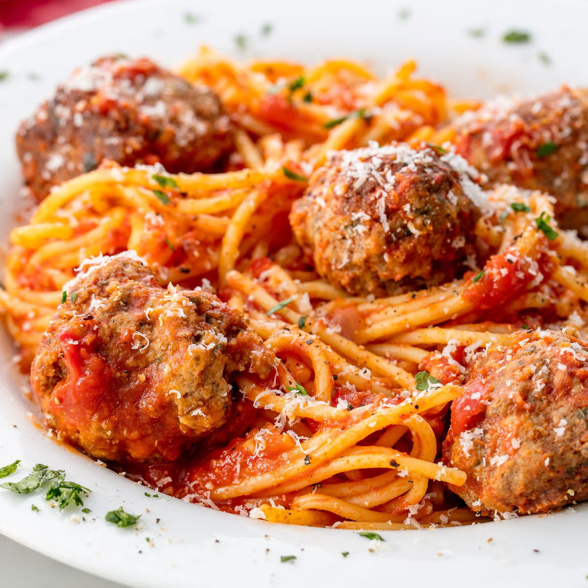

Spaghetti and Meatballs

This spaghetti and meatball recipe is the ultimate weeknight family dinner — quick, easy, and picky eater-approved!
Ingredients:
- 1 lb. spaghetti
- 1 lb. ground beef
- 1/3 cup bread crumbs
- 1/4 cup finely chopped parsley
- 1/4 cup freshly grated Parmesan
- 1 large egg
- 2 garlic cloves, minced
- 1/2 tsp. red pepper flakes
- 2 Tbsp. extra-virgin olive oil
- 1/2 cup onion, finely chopped
- 1 (28-oz.) can crushed tomatoes
- 1 bay leaf
- Kosher Salt
- Freshly ground black pepper
Directions:
- In a large pot of salted boiling water, cook pasta until al dente. Drain.
- In a large bowl, combine beef with bread crumbs, parsley, Parmesan, egg, garlic, 1 teaspoon salt, and red pepper flakes. Mix until just combined then form into 16 balls.
- In a large pot over medium heat, heat oil. Add meatballs and cook, turning occasionally, until browned on all sides, about 10 minutes. Transfer meatballs to a plate.
- Add onion to pot and cook until soft, 5 minutes. Add crushed tomatoes and bay leaf. Season with salt and pepper and bring to a simmer. Return meatballs to pot and cover. Simmer until sauce has thickened, 8 to 10 minutes.
- Serve pasta with a healthy scoop of meatballs and sauce. Top with Parmesan before serving.
Home